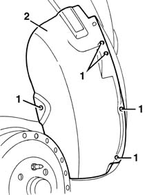

7055B43 REAR WHEEL ARCH liner (one), left or right - R.R.
- Path
- Procedures > 70 FITTINGS > 7055 MOULDINGS ON PROTECTIONS > 7055B EXTERIOR PROTECTIONS > 7055B43 REAR WHEEL ARCH liner (one), left or right - R.R.
- Kind
- repair procedure (removal / refitting; the operation number is the code)
- Applies to
- all engines; all production periods
- Interactive page
- https://sloeber94.github.io/elrnDB-fMltpl/en/#/2892269
Applies to: all engines; all production periods
 Removing
Removing
 Refitting
RefittingRemove the rear wheel.
1. Undo the bolts securing the wheelarch.
2. Remove the additional wheelarch.

Applies to: all engines; all production periods
Refitting
RemovingCheck that the wheelarch is undamaged.
Fit the additional wheelarch.
Tighten the screws.
Refit the rear wheel.
Topics that link to this page (7)
- 1042A34 CNG CYLINDER RECHARGE VALVE - R R
- 1042A43 CNG REPRESSURIZING PIPE FROM REPRESSURIZING VALVE TO SINGLE-ACTING VALVE - R.R.
- 1042A44 cng recharge pipe connection sleeve - r r
- 1043A30 gpl filler fitting r r
- 1043A34 filler pipe from fitting to gpl tank r r
- 5580H38 parking sensor system rear side sensor (1), lh or rh - r r
- 7055B18 Rear BUMPER - R.R.